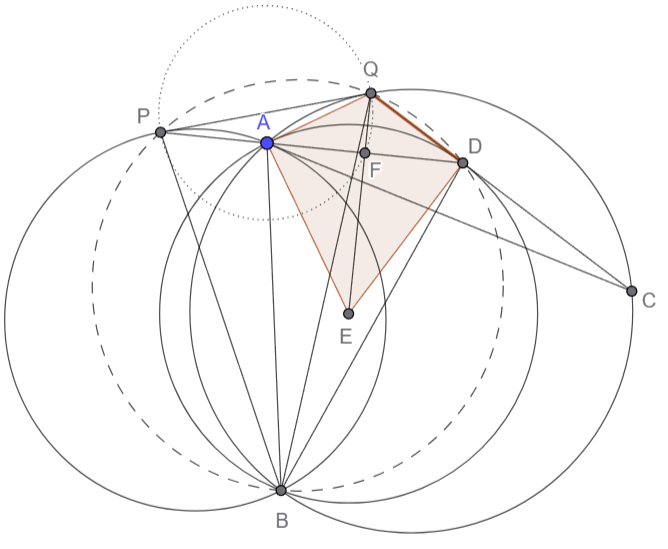

Problem
Let $\omega_1$ and $\omega_2$ be circles , intersecting at $A$ and $B$.The common tangent , closer to $A$ , of $\omega_1$ and $\omega_2$ touches them at $P$ abd $Q$ respectively.The tangent of $\omega_1$ at $A$ intersects $\omega_2$ at $C$ , which is different from $A$ and the extention of $AP$ meets line $QC$ at $D$.Let $E$ be circumcenter of $ABD$.Lines $AD$ and $QE$ intersect at $F$.Prove that $F$ lies on circle with diameter $PQ$
Solution
Nice problem from EMC 2025. There are a lot of tangents, and actually this is deadly similar to Nepal's PTST 2026 P6. I actually skillissued quite a bit on this in the exact same part though, which was to show a certain cyclicity, the rest was easy though. Enjoy this problem:

First we show that $P, B, D, Q$ is cyclic. Note angles are directed here, we have:
$\measuredangle PBQ = \measuredangle PBA + \measuredangle ABQ = \measuredangle DAC + \measuredangle ACD = \measuredangle ADQ = \measuredangle PDQ$
So it is cyclic. Now we want to show that $QAED$ is a kite, which since $EA=ED$ is just a matter of showing $QA=QD$. This is simple however, as:
$\measuredangle ADQ = \measuredangle PDQ = \measuredangle PBQ = \measuredangle PBA + \measuredangle ABQ = \measuredangle QPA + \measuredangle AQP = \measuredangle QAD$
Which gives $QA=QD$, so $QAED$ is a kite and we're done by the perpendicularity condition of the diagonals of a kite. $\square$